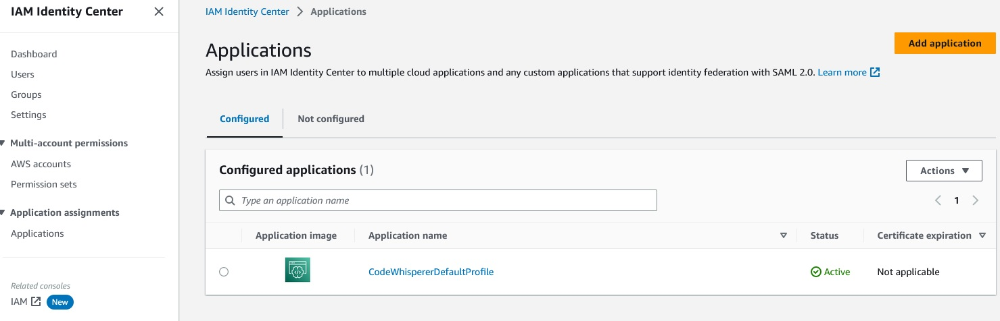
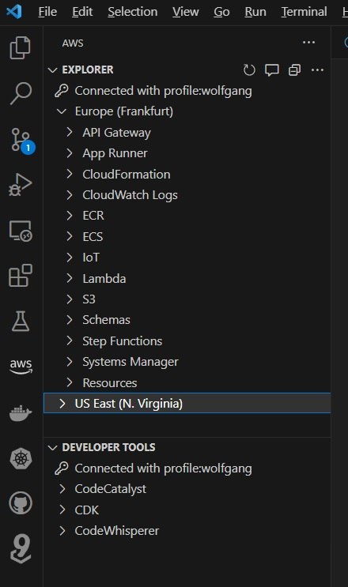
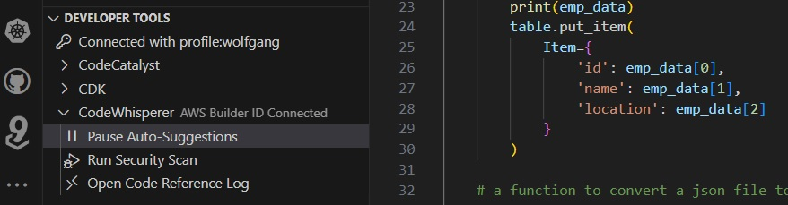
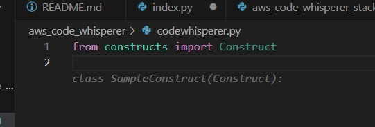

SCC
Brasil
os cloud gurus
Software Cloud Consulting
Your software development, cloud, consulting & shoring company
Get started with AWS Code Whisperer

By Wolfgang Unger
AWS Code Whisperer is an awesome tool to speed up your coding, therefor let's have a look on
it in this little HowTo and Quickstart tutorial
Before using it, you must set it up in your aws account.
I have evaluated Code Whisperer very early, in its Free Trial phase, so the setup process might
have changed by now.
Best, you have a look in the AWS documentation, if the process has changed by now.
AWS
AWS Code Whisperers Documentation
In the Trial phase you needed to add CodeWhisperer in the IAM Identity Center (succesor to AWS
Single Sign on) of your Master Account.
Open IAM Management and you find it at the left menu.
In the IAM Identity Center you have a menu entry applications, open this and press the Button
'Add application'.
Once added, you should see Code Whisperer in your configured applications.

In the Trial phase you needed also your AWS Builders ID, this might become obsolet by now, if
you are not aware of this ID, take a look
on this documentation here, were you can for example create one.
AWS
AWS Builder ID Documentation
Once these prerequisites are done, you can start to actually use Code Whisperer finally.
Therefore integrate it in your favorite IDE, I am using Visual Studio for this blog.
Open the Extensions Tab in Visual Studio and install the AWS Toolkit.
Once done, you find the AWS Logo in your left-side menu. With the toolkit you can access
resources in a connected AWS Account and a lot of options on these,
but we are now more interested in the Developer Tools . You should see Code Whisperer there,
also other tools like Code Catalyst and CDK.

Press the play Button to activate Auto Suggestions.

Now you can actually start coding and you will get auto suggestions from Code Whisperer.
If you don't know how to start please have a look in my repo, you will find some examples on CDK
files and also Lambdas.
Let's try it out for now with a CDK python file.
Create a new file named 'codewhisperer1.py'.
Start typing the imports, for example :
from constructs import
Now CodeWhisperer will already auto suggest
from constructs import Construct
You can accept any suggestion with the Tab key.
Once accepted, Code Whisperer gives you a new suggestions, based on the now existing code.
Since you imported a Construct, you get now suggested the Constructor for the Construct Class.

If you would have imported a Stack class, for example by
from aws_cdk import Stack
Code Whisperer would suggesst you the constructor for Stack Class, for example
class MyStack(Stack):
Once you accepted the constructur for either the Construct or the Stack class, the next suggestion will be the init method:
class MyStack(Stack):
def __init__(self, scope: Construct, construct_id: str, **kwargs) -> None:
super().__init__(scope, construct_id, **kwargs)
Try the following, this really shows the possibilites of CodeWhisperer:
import Stack from aws_cdk.
Import also Lambda ( you might already get the suggestions)
from aws_cdk import aws_lambda as _lambda
Once you have imported Lambda, the suggestion for the Constructor will now be
class LambdaStack(Stack):
def __init__(self, scope: Construct, construct_id: str, **kwargs) -> None:
super().__init__(scope, construct_id, **kwargs)
And below this already the implementation for the creation of a Lambda function, a policy and role for this function! Really nice.
Once you have created the Stack class, you can now try to create CDK resources.
If you just press return and wait, you will already get some aleatory suggestions like :
# create a sqs queue with a name of "my-queue"
sqs = boto3.resource("sqs")
sqs.create_queue(QueueName="my-queue")
# create a s3 bucket with a name of "my-bucket"
s3 = boto3.resource("s3")
s3.create_bucket(Bucket="my-bucket")
# create a ec2 instance with a name of "my-instance"
ec2 = boto3.resource("ec2")
Of course you want to create a dedicated resource.
For this, use the comments.
Type a comment for example
# create a dynamo table
Once typing, you will get suggestions again even with comments, for example
# create a lambda function with a name of "my-function"
Accept it and you will get the code for creating the lambda function.
Try it with other resources ! It is really awesome, you will save a lot of time.
Of course you will still have to look a the documentation for adding attribute to your resources, but at least you get really fast a basic skeleton to create an object.
Next let's try out, how this works for a Lambda Function.
Create again a python file, this time let's name it index.py
Type import json.
Now you will again get the next suggestions, like import botox or other libs.
Since Code Whisperer already realized this is going to be a Lambda Function, he will suggest the handler next:
def lambda_handler(event, context):
Now we can start to code some functionality.
Let's make use of the comments again.
Try typing the following Comments and you will see the great code snippets your are getting this way
# a function to convert a json file to a csv file
# a function that reards a txt file from s3 and returns the text
# a function that writes a txt file to s3
# a function that reads from a dynamoDB table
Now should have a good impression of the possibilities of this tool. Have fun and continue to code.
Autor

Wolfgang Unger
AWS Architect & Developer
6 x AWS Certified
1 x Azure Certified
A Cloud Guru Instructor
Certified Oracle JEE Architect
Certified Scrum Master
Certified Java Programmer
Passionate surfer & guitar player